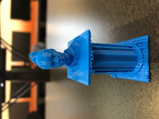
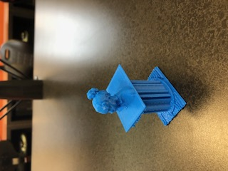
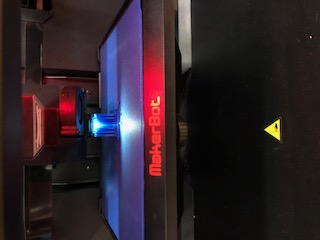

To print in Makerbot, as a design rule, you must use Fusion 360 to create your design. The size of the object being printed must be smaller than the platform. Small intricate designs will also not work well because the machine can not pick up the small details. Ink cartriges need to be refilled as well.
For my second project, I put my head on a pedestal. First, Sarah scanned my head. The scan went to my computer and I combined the scan with a pedestal that I downloaded. I downloaded the combination on a flash drive and walked it over to the printer and printed.



Additive Manufacturing
For my third project, I printed a tag for my dog, Louis. I used Fusion 360 to create it.